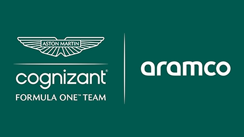

Aston Martin

Aston Martin es una escudería británica de Fórmula 1 que a finales de 2020 regresó a la parrilla, gracias a que Lawrence Stroll invirtió en Aston Martin £182 millones
de libras, lo cual le proporcionó el 20 % de las acciones del fabricante, con tal movimiento decide usar la imagen de Aston Martin para convertir a partir de 2021 al
equipo Racing Point en Aston Martin F1 Team.12 Actualmente tiene su base en Silverstone, Reino Unido
Algo de historia
El debut en Fórmula 1 sucedió luego de buenos resultados de la automotriz en carreras de deportivos, incluyendo una victoria en las 24 Horas de Le Mans. Ocurrió en el Gran Premio de los Países Bajos de 1959, con dos Aston Martin DBR4 del equipo de nombre David Brown Corporation. Esa temporada reiteraron participación en Gran Bretaña, Portugal e Italia. Roy Salvadori obtuvo los mejores resultados del equipo en el campeonato, dos sextos lugares, además de un podio en un GP no puntuable.3
Al año siguiente solo se inscribieron en dos Grandes Premios, Países Bajos y Gran Bretaña. Este último fue su última carrera en Fórmula 1, siendo, además, la única
participación del monoplaza DBR5.
Tras algunos problemas económicos de Force India Formula One Team en 2015, comenzaron a estudiar la posibilidad de asociarse con otra marca para mejorar sus ingresos
y resultados. A pesar del importante ingreso económico que recibió por parte de Sergio Pérez y el multimillonario Carlos Slim en patrocinadores, según se hizo público
, Vijay Mallya, director del equipo, solicitó un adelanto de dinero de premios a Ecclestone. Ante la negativa, a partir del verano europeo, el equipo indio confirmó
que sus intenciones eran competir como Aston Martin, mejorando así el desarrollo del monoplaza y recibiendo un mayor interés de los patrocinadores por el marketing de
la marca británica.